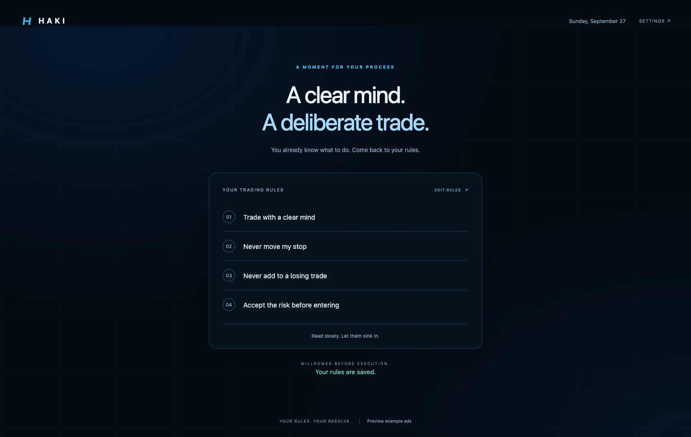

Make your rules yours.
Write the rules you refuse to break. Edit and reorder them as your process evolves.
WILLPOWER BEFORE EXECUTION
You know your process. Haki helps you come back to it — with your own trading rules, right before you enter the market.
DOWNLOAD FOR CHROMEV1.0.0 · ZIP download · Simple manual install
YOUR PROCESS COMES FIRST
You already know what to do.
Follow your process.
3 / 4 CONFIRMED
YOUR TRADING SPACE, WITH INTENTION.
A SIMPLE RITUAL
No signals. No strategies. Just a moment to remember the rules you chose for yourself.
Write the rules you refuse to break. Edit and reorder them as your process evolves.
Select your trading websites. See Haki on every new trading tab, every few hours, or once a day.
Your platform waits behind a calm checklist. Check every rule, then enter with intention.
A FRESH TAB. A FAMILIAR PROMISE.
Make Haki your new-tab page for a quiet reminder throughout your day. Your rules are right there, with a quick edit whenever you need it.
Optional. Clean. Entirely yours.

A FEW MINUTES. A BETTER BEGINNING.
This version installs manually in Chrome. Here’s the whole process.
Download Haki V1.0.0, then extract the ZIP into a folder you’ll keep on your computer.
Open chrome://extensions in the address bar. Turn on Developer mode, click Load unpacked, and select the extracted folder containing manifest.json.
Onboarding opens automatically. Write your rules, choose your websites, grant access to each one, and pick your reminder frequency. Enable Haki for new tabs if you’d like.
Use Chrome’s puzzle-piece menu to pin Haki. Open or reload a protected trading website and your checklist will appear.
Keep the extracted folder in place. Chrome may ask whether to keep Haki’s new-tab change. When that feature is off in Haki, it opens Chrome’s built-in New Tab page.
CLEAR BY DESIGN
No. Haki uses the hostname to know when to show its own overlay. It doesn’t collect your credentials, balances, positions, orders, or trading history. Your rules stay in your browser. Read the privacy policy.
Yes. Add a public HTTPS website and grant access for that exact hostname. Subdomains are added separately. Choose from the built-in futures, stock and FX platforms shown above, or add up to 50 custom websites.
No. Haki’s popup includes Emergency Access: hold for five seconds to release the gate on that page. You can also pause protection from the popup after confirming your choice.
No. The Haki new-tab preference is off by default. With it off, Haki opens Chrome’s built-in New Tab page. Chrome declares the replacement at installation, so it may still ask you to approve the change. It cannot restore another extension’s new-tab design.
No. Haki is a behavioral productivity tool. It only reminds you of your own rules; it provides no signals, trade recommendations, or risk-management guarantees. You remain responsible for your trading decisions.
PROCESS OVER IMPULSE
For Chrome. No account needed.